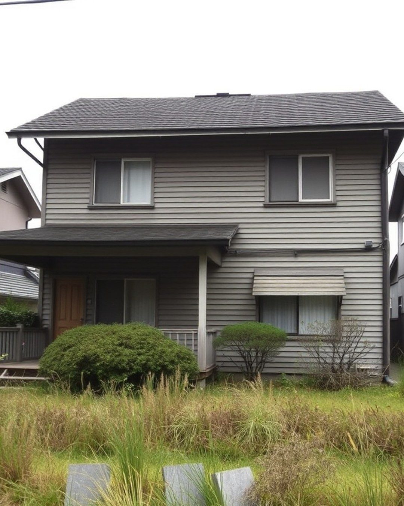
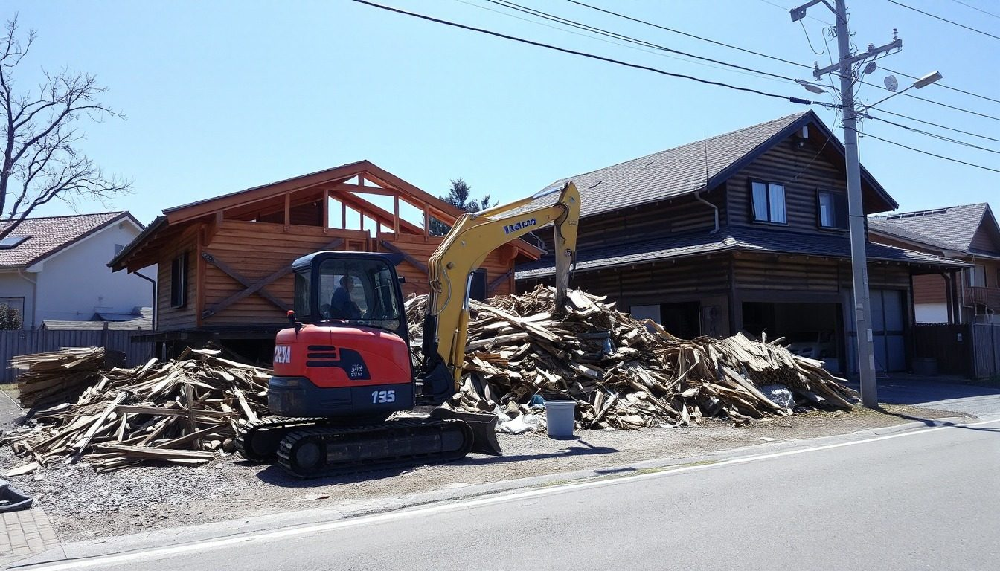

自治体の解体補助金は、札幌市の例で最大150万円。補助金を視野に入れた登録業者から、明細つきの見積を最大3社手配します。完全無料。業者からの営業電話はありません。
※補助金の上限は札幌市（地域連携型・2026年度）の例。制度と上限は自治体ごとに違い、交付決定より前に契約した工事は対象外です。完全無料。しつこい営業はしないよう、対応事業者と取り決めています。

坪単価の目安は、木造3万〜7万円、鉄骨造3万〜6万円、鉄筋コンクリート造4万〜12万円（30坪なら90万〜360万円）。同じ30坪でも、道路の広さ・隣家との距離・地中の埋設物で数倍の差がつきます。だから「一式」でなく、同じ条件の明細つきの見積を最大3社で並べます。
片付けずに、そのままで大丈夫です。残置物の処分ごと見積できる会社を手配します。解体と一緒に処分した方が、別の業者に片付けだけ頼むより安く済むことが多いです。量が多いと処分費が増えるので、先にお伝えいただくと後から足されません。
母屋と一緒でも、小屋や物置だけでも手配できます。物置・カーポート・浄化槽などは付帯工事として、木造30坪の目安で10万〜20万円。先に伝えておくと、見積の明細に入り、あとから足されません。
建物を解体せず、ブロック塀や庭木だけの撤去も手配できます。付帯工事（ブロック塀・庭木・物置・カーポート・浄化槽）は木造30坪の目安で10万〜20万円。大きな庭石や庭木があるときは、先に伝えると見積が正確になります。
建物を残したまま、内装だけの解体（スケルトン）も手配できます。壊す範囲と、出る廃材の量で費用が変わるので、現地を見た明細で確かめます。
対応できます。焼け残りや倒れた部材は分別と運搬に手間がかかるぶん、処分費が増えます。アスベストの事前調査は2023年10月から規模を問わず必要なので、調査費と、含有建材が見つかった場合の追加費用の条件も、見積の段階で明細に入れてもらいます。
見積を頼むと一斉に電話が鳴る。その不安で止まっている方が多いので、解体案内所はそこを先に約束します。連絡の窓口は事務局の1本だけ。業者へお渡しするのは、条件に合った最大3社に、会社名を事前にお伝えした上でだけです。
業者からあなたへ、営業の電話は行きません。断るときは、事務局が代わりに伝えます。
解体する家のある地域の登録業者の見積を、明細つきで最大3社まで並べて比べられる、完全無料のサービスです。当社は施工をしません。だから、高い見積を勧める理由がありません。
こんなふうに進みます。
空き家になった実家を解体しようと、近くの会社に1社だけ見積を頼みました。「一式180万円」と言われ、高いのか安いのか分かりません。
その後：市の空き家除却の補助の対象と分かり、契約の前に申請して交付決定を待つ順番に。明細つきの見積3社を同じ条件で並べ、補助金を差し引いた手取りで比べて決定。
家の中に家財がそのまま残っています。「片付けてからでないと見積できない」と言われて、そこで止まっています。
その後：残置物の処分を明細に入れた見積を3社。片付け業者に別で頼む案と総額で比べて、解体と一緒に処分する案に決定。
築50年の家です。アスベストが心配で、調査だけで何十万円もかかると聞きました。壊す前に、いくらかかるのか全体を知りたいです。
その後：調査費込みの明細つき見積を3社。含有建材が見つかった場合の追加費用の条件まで、見積の段階で書面で確認。
※ご相談の例です。個人が特定される内容は含みません。
先に知っておくと、損をしません
| 構造 | 坪単価の目安 | 30坪の目安 |
|---|---|---|
| 木造 | 3万〜7万円 | 90万〜200万円 |
| 鉄骨造 | 3万〜6万円 | 90万〜180万円 |
| 鉄筋コンクリート造 | 4万〜12万円 | 120万〜360万円 |
同じ家でも、頼み方で手取りが変わります
1社に直接頼むと、その会社のやり方の値段しか出ません。案内所は、明細つきの見積を最大3社で並べ、補助金と付帯工事を先に整えます。
1社に直接頼むと「一式◯◯万円」。何にいくらかかっているか分からない
案内所で並べると本体・付帯・処分・諸経費に分けた明細を、同じ条件で3社並べます
1社に直接頼むと言われなければ知らないまま契約。交付決定の前に契約すると対象外
案内所で並べると補助金を視野に入れた会社を手配。対象なら申請→交付決定→契約の順番に組みます
1社に直接頼むと地中の埋設物や残置物で、工事の途中から足される
案内所で並べると上がりやすい条件を先に伝え、追加の条件を見積の段階で書面にします
1社に直接頼むと自分で断る。断ったあとも営業の電話が続くことがある
案内所で並べると事務局が代わりに伝えます。断ったあとに連絡は行きません
先に並べてから決める。それが、費用の面で損をしない順番です。
木造30坪の目安（出典の幅）。同じ家でも、この割り振りで総額が変わります。明細で並べる理由です。
金額と割合は木造30坪の一般的な目安です。家の条件で変わります。
この条件に当てはまるときは、先に伝えておくと、後から足されません。
構造・道路と隣家・地中とアスベスト。この3つで、同じ30坪の解体費が数倍変わります。
地域・構造・階数で、総額はこれくらい違います。
解体業者2社が自社サイトで公開している施工実績の金額（2026年9月時点）。当社の実績ではありません。アスベスト・地中埋設物の撤去費は含まれていません。
補助金を視野に入れた登録業者が、解体する家のある市区町村の制度と申請の順番まで、見積の段階で確認します。どの市も、交付決定より前に契約・着工した工事は対象外で、年度の予算に達すると受付が終わります。
金額は各市の公式ページの上限額（2026年9月時点）。対象の建物や補助率は自治体ごとに違います。
金額は一般的な目安です。地域と現地の見積で確定します。
まだ見積の段階ではない方へ
「まず何から？」を1枚に。家財をどうするか、誰が何を届け出るか、いつ登記するか。見積を頼む前に、順番だけ持ち帰ってください。
解体のご相談で、よく伺う不安です。
70代・男性・実家から車で3時間
一括見積のサイトに登録したら、知らない会社から次々に電話が来て、断るのに疲れました。本当に電話が来ないなら、もう一度考えたい。
50代・男性・神奈川在住
隣の家と壁がほとんど接しています。工事で隣に迷惑をかけたら、親の代からの付き合いが壊れそうで、踏み切れません。
60代・女性・大阪在住
役所への届出や、電気やガスの解約は、誰がやるのでしょうか。手続きが分からなくて、業者に聞くのも気が引けます。
40代・男性・愛知在住
遠方に住んでいて、現地に何度も行けません。立ち会いなしで、どこまで進められるのか知りたいです。
※お悩みの例です。個人が特定される内容は含みません。
木造30坪なら、工事そのものは8日〜2週間ほどが目安。補助金の申請と届出の期間は、別に見ておきます。近隣への挨拶と役所への届出は、業者が行うのが通例です。
日数は木造30坪の目安です。構造・立地・残置物の量で変わります。

全国。解体する家のある市区町村で対応できる登録業者を手配します。ご自身が遠くにお住まいでも、家が離れた場所にあっても手配できます。
当社への費用はかかりません。当社は対応した会社から紹介料を受け取ることがあります。お客様が払うのは、実際に依頼した解体工事の費用だけです。
来ません。連絡は事務局から1本だけです。業者へ情報を渡すのは、条件に合った最大3社に、会社名を事前にお伝えした上でだけです。断ったあとに連絡が続くことはありません。
もちろんです。見積を見て納得できなければ、事務局にひと言ください。断りの連絡は事務局が代わりに伝えます。費用も理由もいりません。
自治体によって、老朽化した空き家の解体に補助金があります。補助率や上限は自治体ごとに違い、たとえば札幌市は上限50万円（地域連携型は150万円）、北九州市は1/3以内で上限30万円、名古屋市は1/3〜2/3で上限40万〜80万円です（2026年9月時点・各市の公式ページ）。いずれも交付決定の前に契約・着工した工事は対象外で、年度の予算に達すると受付が終わります。対象かどうかは、補助金の申請に慣れた登録業者が見積の段階で確認し、申請→交付決定→契約の順番で進めます。
できます。残置物の処分ごと見積できる会社を手配します。解体と一緒に処分した方が、別の業者に片付けだけ頼むより安く済むことが多いです。量が多いと処分費が増えるので、先にお伝えいただくと後から足されません。
2023年10月から、解体の前に有資格者（建築物石綿含有建材調査者）による石綿の事前調査が、規模を問わず必要です。調査費は数万円ほどが目安とされていますが、除去が必要になると数十万〜数百万円と幅が大きく、現地の見積で確定します。調査費と、含有建材が見つかった場合の追加費用の条件を、見積の段階で明細に入れてもらいます。
見積のための現地確認は業者が行います。立ち会いが要る場面は最小限で、必要な場合は事務局を通じて事前にご相談します。近隣への挨拶や役所への届出は、業者が行うのが通例です。
住宅が建っている土地は、固定資産税の課税標準が最大6分の1（200㎡以下の部分）に軽減されています。判定は毎年1月1日で、その時点で更地になっていると翌年度はこの特例が使えません（実際の税額は評価額と負担調整で決まります）。時期をずらせる場合は、年明けの解体も含めて先にご相談ください。
あります。古い家がついたまま買い取る会社があれば、解体費を払わずに売れることがあります。売却が目的の場合は、現状のまま売る案と解体して売る案を手取りで並べてから決めるのをおすすめしています。フォームの「解体後の予定」で「土地を売る」を選んでいただければ、その前提でご案内します。
昭和56年5月31日以前に建てられた実家を相続した場合、取り壊して土地だけを売っても、譲渡所得から最高3,000万円を控除できる特例があります（相続開始から3年目の年末まで・売却代金1億円以下・2027年12月31日までの売却など要件あり）。適用できるかは税理士か税務署でご確認ください。
木造30坪なら、工事そのものは8日〜2週間ほどが目安です。補助金の申請から交付決定までの期間、アスベストの事前調査、届出（80㎡以上は着工の7日前まで）は、工事の前に別に見ておきます。
解体する家のある地域で対応できる登録業者から、最大3社。会社名は連絡の前にお伝えします。解体工事業の登録か建設業許可（解体工事業）を持ち、廃棄物を適法に処分でき、工事の損害賠償保険に入っている会社です。
1分で入力できます。解体する家のある地域の登録業者から、明細つきの見積を最大3社。連絡は事務局から1〜2営業日を目安に。業者からの営業電話はありません。
お電話の窓口は置いていません。担当が現地の会社と直接やり取りするため、フォームでいただいた方が早くご連絡できます。1〜2営業日でこちらからお電話します。